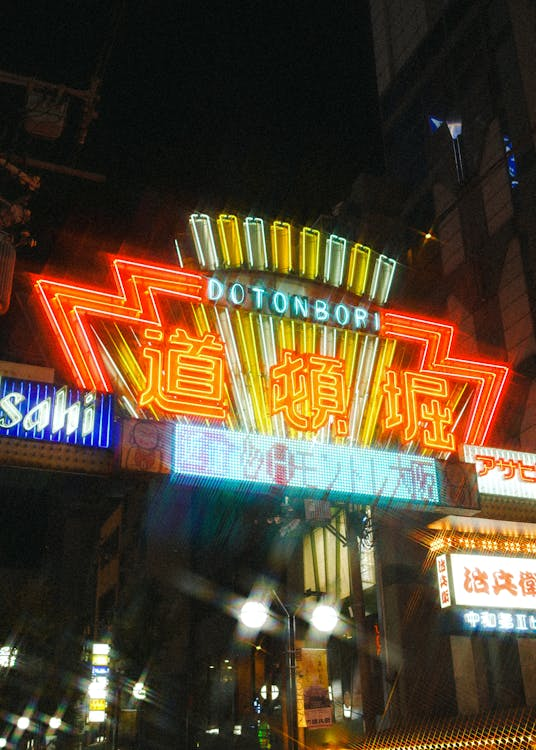
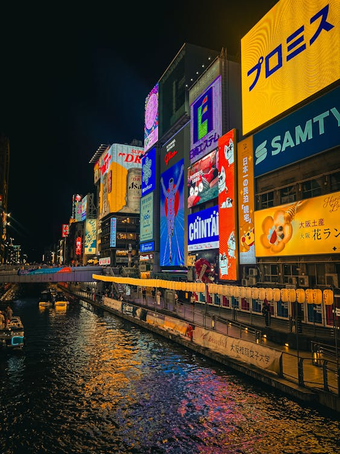
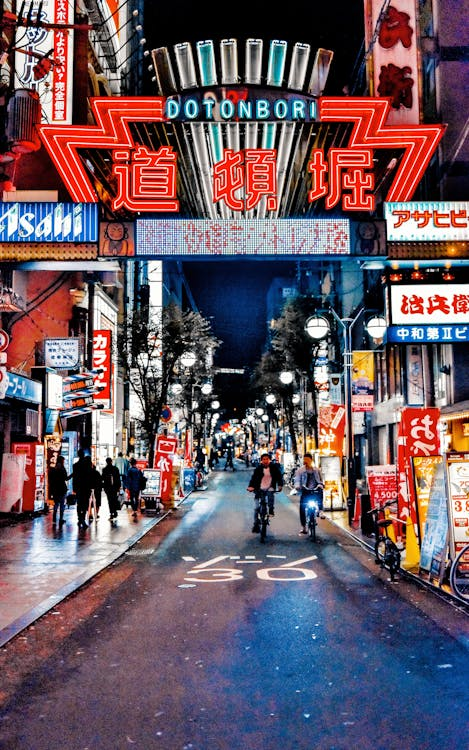
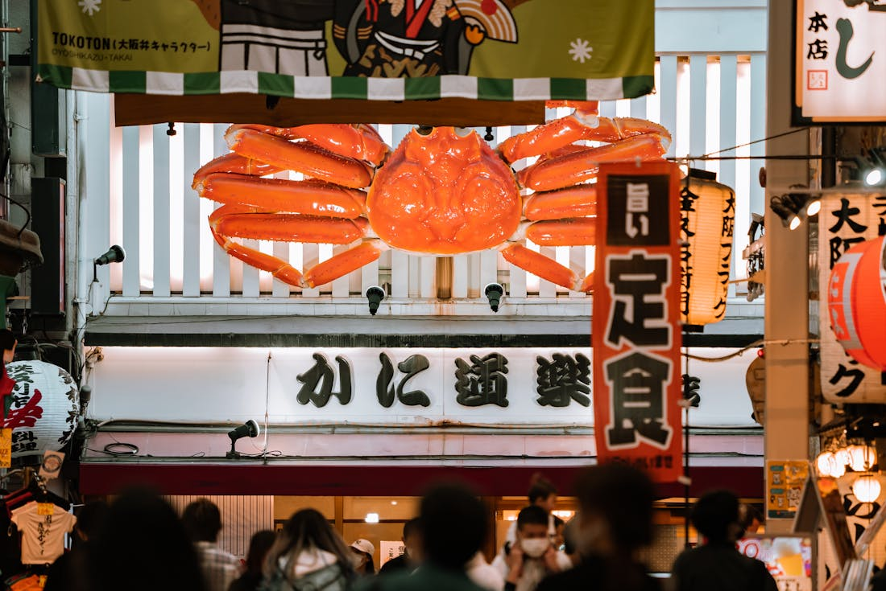
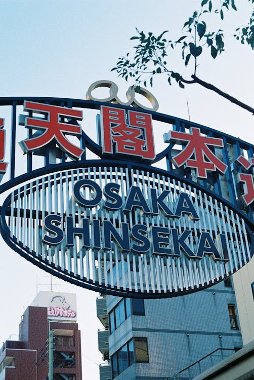
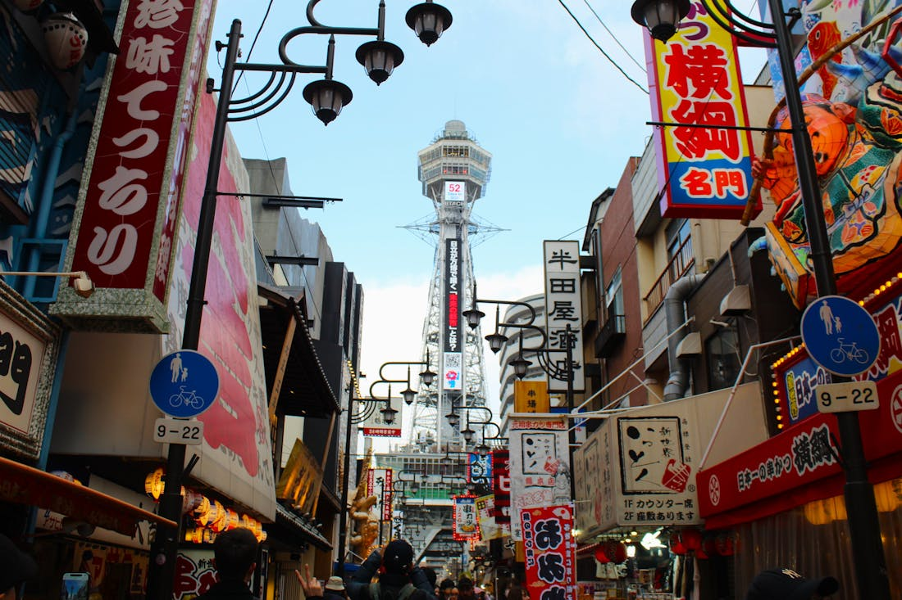
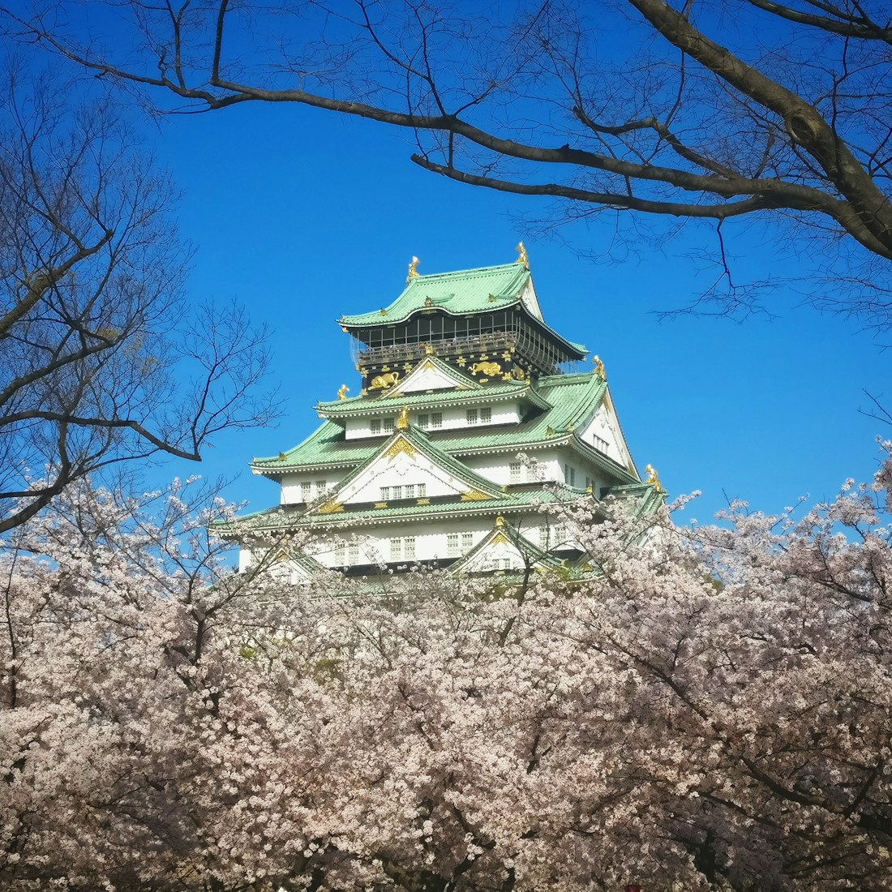

Photo Gallery
From our Osaka tours
Photos taken with our guests across Osaka's most vibrant streets and markets.

Dotonbori Canal道頓堀 · Neon Reflections on the Water

Kuromon Market黒門市場 · 200 Years of Fresh Produce

Osaka Street Food屋台 · Takoyaki, Kushikatsu, Okonomiyaki

Night Reflections夜景 · City Light Dancing on the Canal

Osaka Streets大阪 · Always Moving, Always Eating

Shinsekai & Tsūtenkaku新世界 · Retro Osaka Unchanged Since 1912

Osaka Castle大阪城 · 400-Year Fortress in Cherry Blossom Season

Castle from Above天守閣 · Cherry Blossoms Around the Moat